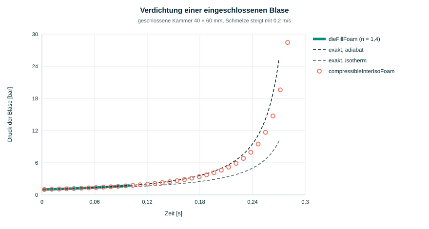
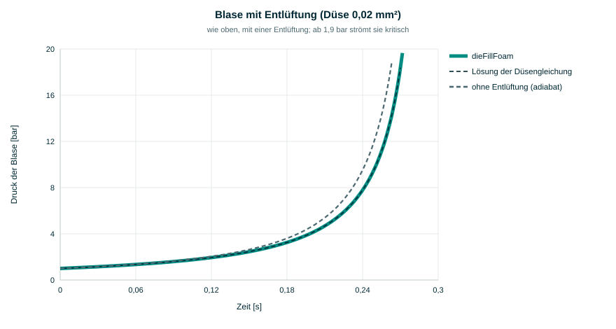
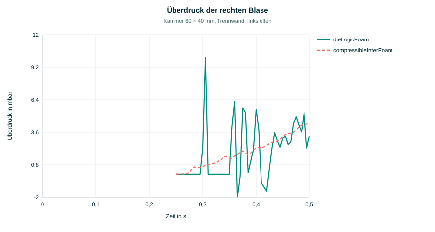
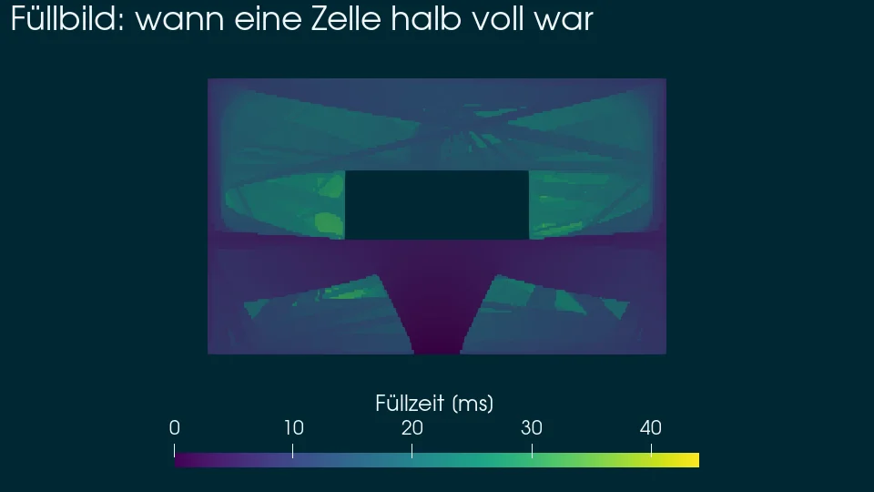
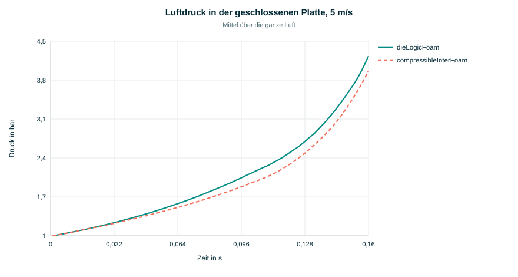
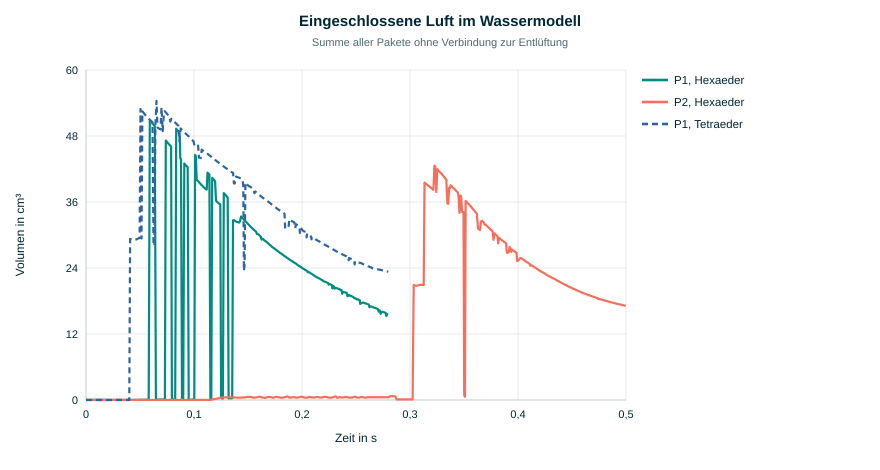
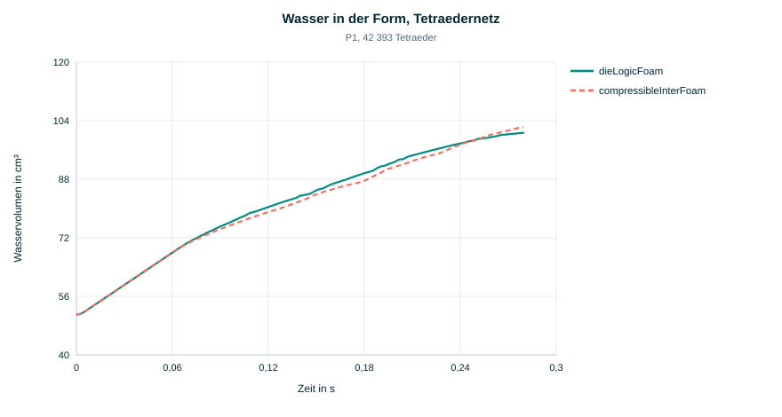
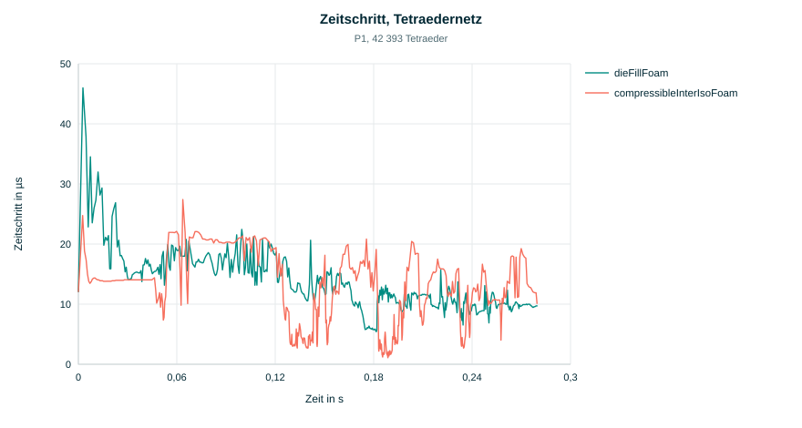

1. Wofür der Solver gebaut ist
Beim Druckguss füllt die Schmelze die Form in wenigen Hundertstelsekunden. Ob dabei Luft
eingeschlossen wird, wo Oxidhäute in die Schmelze gefaltet werden und wie weit die Schmelze
dabei abkühlt, entscheidet über Porosität, Kaltläufe und Ausschuss. Der naheliegende Ansatz
in OpenFOAM ist compressibleInterIsoFoam: Schmelze und Luft werden als zwei
Phasen gerechnet, die Luft kompressibel. Im Druckguss führt das zu drei Problemen:
- Das Dichteverhältnis von rund 2000 und das Viskositätsverhältnis koppeln eine fast inkompressible Schmelze an ein kompressibles Gas. Die Druckgleichung schwingt, die Energiegleichung an der Grenzfläche ist empfindlich, und die Rechnung bricht leicht ab.
- In den Entlüftungen strömt die Luft schnell, bis zur Schallgeschwindigkeit, mit Verdichtungsstößen. Diese Luftströmung bestimmt den Zeitschritt, nicht die Schmelze.
- Eine Entlüftung von 0,2 mm Spalthöhe müsste fein vernetzt werden, nur damit die Luft richtig abfließt, und Schmelze, die den Rand erreicht, läuft aus der Form.
dieLogicFoam geht den Weg der kommerziellen Programme (MAGMA, Flow-3D): Die
Luft verschwindet aus den Strömungsgleichungen. Gerechnet wird nur die Schmelze. Jede
zusammenhängende Luftblase ist ein Luftpaket mit einem einzigen Druck, der sich aus ihrer
Masse und ihrem Volumen ergibt; über Entlüftungen verliert das Paket Masse nach dem Gesetz
einer Düse; seine Temperatur wird mit Verdichtung und Wärmeabgabe an die Schmelze
gerechnet. Diese Seite beschreibt, wie das im Einzelnen gelöst ist, und prüft es an kleinen
Fällen gegen exakte Lösungen und an allen Fällen gegen Solver mit gerechneter Luft:
compressibleInterFoam (MULES), compressibleInterIsoFoam und
für die Gießkammer interFoam. Abschnitt 14 fasst den Vergleich zusammen.
Warum diese Entwicklung wichtig war. Für eine Gießsimulation zählen drei Dinge:
die Schmelze muss erhalten bleiben, eingeschlossene Luft muss mit ihrem Druck erkannt
werden, und die Rechnung muss auf den Netzen laufen, mit denen Gussteile vernetzt werden,
auch mit bewegtem Kolben. Die Solver mit gerechneter Luft erfüllen das nicht zuverlässig:
auf der gestauchten Gießkammer verlieren beide kompressiblen VoF-Solver 26 bis 46 % der
Schmelze, bei 25 m/s im Anschnitt bricht compressibleInterFoam ab, und ihre
Mischzellen kühlen verdichtete Luft stärker, als es die Wärmeleitung täte.
dieLogicFoam hält die Schmelze in allen Beispielen auf besser als 0,01 %, läuft
auf Hexaedern, Tetraedern und bewegten Netzen, und seine Luftpakete treffen die exakten
Lösungen und eine 1D-Wärmeleitungsrechnung. Wo es von den Referenzen abweicht, zeigt der
Vergleich mit feineren Netzen, dass sich die Referenz ihm nähert.
Nur die Schmelze wird gerechnet, die Luft als Pakete mit einem Druck je Blase. Der
Zeitschritt folgt der Schmelze, die Druckgleichung sieht nur ein Fluid, und eingeschlossene
Luft wird trotzdem erkannt, verdichtet und über Entlüftungen abgeführt. Eine eingeschlossene
Blase folgt der Adiabate bis auf vier Stellen, eine entlüftete der Düsengleichung auf
0,03 %; mit Wärmeleitung trifft sie eine 1D-Rechnung der Luftsäule auf 0,4 %, auf die
compressibleInterFoam mit feinerem Netz zuläuft.
2. Ein Zeitschritt im Überblick
Jede Zelle des Netzes hat einen Füllgrad $\alpha$ zwischen 0 (leer) und 1 (voll Schmelze). Ein Zeitschritt läuft so ab:
3. Aufbau in OpenFOAM
Der Solver ist eine eigene Anwendung neben den Standard-Solvern. Er nutzt die Bibliotheken
von OpenFOAM (Finite Volumen, isoAdvector, Turbulenz, Netzbewegung) und bringt vier eigene
Bausteine mit. Die Quellen liegen in dieFill/src/dieLogicFoam/:
| Datei | Inhalt |
|---|---|
dieLogicFoam.C | Zeitschleife: Zeitschritt, Netzbewegung, Transport, Aufruf der Bausteine, Füllgrad, Füllzeit, Abbruch |
createFields.H | Felder U, p_rgh,
alpha.melt, Stoffwerte, Schwerkraft, die Bausteine |
UEqn.H | Impulsgleichung der Schmelze; Leerzellen fest |
pEqn.H | Druckgleichung mit Leerzellen, Ghost-Fluid-Rand, einseitigen Flüssen, halbimpliziter Paketdruck, Korrektur von Fluss und Geschwindigkeit |
gasPockets.H/.C | Luftpakete: Regionen, Massenbilanz, Gasenergie (Temperaturfeld, Wärmeleitung, Potentialströmung), Entlüftungen, Liste der Leerzellen, abgerissene Tropfen |
voidExtrapolation.H/.C | Geschwindigkeit im Leerraum, Druckgradient mit Luftdruck an der Oberfläche, Verteilung der Überfüllung |
meltThermal.H/.C | Temperatur, Wärmeübergang an die Form, Latentwärme, Festanteil |
meltInclusions.H/.C | Oberflächenalter, Oxidfilme, eingemischte Luft; gemeinsamer Transport passiver Schmelzegrößen |
Für die Gießkammer kommt eine Bibliothek zur Netzbewegung hinzu,
libshotSleeve, mit dem Netzwerkzeug shotSleeveMesh. Sie wird
über constant/dynamicMeshDict geladen und ist auf der Seite
Netzbewegung der Gießkammer beschrieben.
Ein Fall hat den üblichen Aufbau aus 0/, constant/ und
system/. Dazu kommen drei Wörterbücher in constant/:
| Wörterbuch | Inhalt |
|---|---|
gasProperties | Schwellen für Leer- und Gaszellen, Umgebungsdruck, Gas ($R$, $\gamma$, $n$), Druckgrenze, Entlüftungen je Rand (Querschnitt und Beiwert, oder offen) |
thermalProperties | Temperatur ein oder aus, $c_p$, $\lambda$, Latentwärme, Liquidus, Solidus, Wärmeübergang und Formtemperatur je Rand |
inclusionProperties | Oxidmodell ($k_p$, $C_\kappa$) und Einmischungsmodell ($C_{air}$, $C_t$, $\sigma$) |
Geschrieben werden neben $\alpha$, $\mathbf{u}$ und $p$ die Felder pGas
(Druck des Pakets), gasPocket (Nummer des Pakets), gasTrapped
(1 in Paketen ohne Entlüftung), fillTime (Zeitpunkt, zu dem eine Zelle halb
voll war), T, solidFraction, surfaceAge,
oxide und airEntrained. Protokolle entstehen in
postProcessing/gasPockets.dat (Zahl der Pakete, Luftvolumen, eingeschlossen,
Drücke, Massenstrom der Entlüftungen) und postProcessing/inclusions.dat.
Alle Bausteine laufen parallel: die Suche der Pakete, die Fortsetzung der Geschwindigkeit
und die Flüsse an der Oberfläche berücksichtigen die Prozessorgrenzen.
4. Die Schmelze
Die Schmelze ist ein inkompressibles newtonsches Fluid mit konstanter Dichte $\rho$. Ihr Füllgrad wird geometrisch transportiert, mit isoAdvector (Roenby, Bredmose und Jasak, 2016): in jeder Zelle wird die Oberfläche als Ebene rekonstruiert und über den Zeitschritt verschoben, so dass die Grenzfläche eine Zelle scharf bleibt.
Impuls und Kontinuität gelten nur in Schmelzezellen, deren Mittelpunkt in der Schmelze liegt ($\alpha \ge 1/2$). Die Schwerkraft steckt im Druck $p_{rgh} = p - \rho\,\mathbf{g}\cdot\mathbf{x}$; weil die Dichte konstant ist, bleibt in der Impulsgleichung nur sein Gradient:
Gelöst wird wie in pimpleFoam: Impulsgleichung aufstellen, daraus die
Geschwindigkeit ohne Druck $\mathbf{H}/A$ und ihr Fluss $\phi_{HbyA}$, dann die
Druckgleichung
Was dieLogicFoam von einem gewöhnlichen VoF-Solver unterscheidet, ist die Behandlung der Leerzellen. Sie beschreibt der nächste Abschnitt.
5. Der Leerraum
5.1 Leerzellen als Druckrand
Alle Zellen mit $\alpha < 1/2$ sind Leerzellen. In der Druckgleichung wird dort
der Wert vorgegeben: der Druck $p_k$ des Luftpakets, zu dem die Zelle gehört, umgerechnet
auf $p_{rgh}$. In OpenFOAM geschieht das mit fvMatrix::setValues: die Zeile
der Leerzelle wird zur Gleichung $p = p_k$, ihre Kopplung an die Nachbarn wandert auf deren
rechte Seite. Die Schmelzezellen sehen den Luftdruck damit wie einen Randwert.
Ghost-Fluid-Randbedingung. Der Druck soll an der Oberfläche wirken, nicht in der Mitte der Leerzelle. Zwischen einer Schmelzezelle S und einer Leerzelle L liegt die Oberfläche dort, wo $\alpha$ linear auf 1/2 fällt. Ihr Abstand vom Mittelpunkt der Schmelzezelle, in Zellabständen, ist
Der Druckgradient über diese Fläche ist $(p_k - p_S)/(\theta\,d)$ statt $(p_L - p_S)/d$. Im Code wird dafür nur der Koeffizient der Fläche in der Laplace-Matrix durch $\theta$ geteilt (Gibou und andere, 2002). $\theta_{min} = 0{,}5$ begrenzt die Steifigkeit; kleinere Werte machen die Oberfläche schärfer, aber die Gleichung steifer.
5.2 Der Fluss durch die Oberfläche
Der vorhergesagte Fluss $\phi_{HbyA}$ entsteht normalerweise durch Interpolation von $\mathbf{H}/A$ zwischen den beiden Zellen einer Fläche. An einer Fläche zwischen Schmelze und Leerraum wird er nur aus der Schmelzezelle genommen, wie an einem Auslass. Mit der Interpolation würde die fortgesetzte Geschwindigkeit der Leerzelle den Fluss treiben, der Fluss die Geschwindigkeit der Oberflächenzelle, diese wieder die Fortsetzung: die Oberfläche läuft dann davon.
Nach dem Lösen muss der Fluss durch die Oberfläche genau der sein, mit dem die Zeile der
Schmelzezelle gelöst wurde, sonst ist die Kontinuität dort verletzt. Weil
setValues die Kopplung zur Leerzelle aus der Matrix entfernt, werden die
Koeffizienten dieser Flächen vor dem Eintragen der Randwerte gesichert und der Fluss nach
dem Lösen aus ihnen aufgebaut, einschließlich der nichtorthogonalen Korrektur der Matrix.
Auf Hexaedern ist das dasselbe wie ein expliziter Gradient. Auf Tetraedern mit 70°
Nichtorthogonalität ist es entscheidend: mit einem expliziten Gradienten liegt der größte
örtliche Kontinuitätsfehler bei $5\cdot10^{-4}$, und an der Oberfläche entstehen
Scheingeschwindigkeiten bis 60 m/s; mit den gesicherten Koeffizienten sind es
$7\cdot10^{-8}$ und keine Scheingeschwindigkeiten.
5.3 Geschwindigkeit im Leerraum
Impuls wird in Leerzellen nicht gelöst, aber isoAdvector braucht dort eine Geschwindigkeit, damit dünne Filme und Strahlspitzen mit $\alpha < 1/2$ weiterfließen. Sie wird schichtweise fortgesetzt: jede Leerzelle, die an eine bekannte Zelle grenzt, erhält den Mittelwert ihrer bekannten Nachbarn, zwei Schichten weit; dahinter ist sie null. Leerzellen ohne bekannte Nachbarn, die noch etwas Schmelze tragen, fliegen ballistisch, $\mathbf{u} = \mathbf{u}^{alt} + \mathbf{g}\,\Delta t$, und die Schmelze, die im Schritt hineinfließt, bringt die alte Geschwindigkeit ihrer Aufwindzelle mit (massengewichtet; so behalten dünne Filme und Tropfen ihren Impuls, siehe 11.3). An Wänden wird die Komponente in die Wand entfernt. Flüsse zwischen zwei Leerzellen kommen aus dieser Geschwindigkeit; dort gilt keine Kontinuität, Leerzellen füllen sich einfach.
5.4 Die Druckkraft
Nach der Druckgleichung wird die Geschwindigkeit der Schmelzezellen mit einem Gauß-Gradienten korrigiert, bei dem auf jeder Oberflächenfläche genau der Luftdruck steht:
So ist die Kraft auf jeden Schmelzekörper exakt der Luftdruck über seine Oberfläche; ein
frei fliegender Tropfen erhält von seinem eigenen inneren Druck keine Kraft, gleich wie groß
die Druckspitzen in ihm sind. Mit der Standard-Rekonstruktion aus den Flüssen
(fvc::reconstruct) beschleunigten sich kleine Tropfen in den ersten Versuchen
auf 300 m/s.
In den Schmelzezellen direkt an der Oberfläche wird die Geschwindigkeit dagegen aus den Flächenflüssen rekonstruiert. Dort ist der Gauß-Gradient nicht mit den Flüssen verträglich: der Fluss durch die Oberfläche kommt aus der Geschwindigkeit der Zelle, die Geschwindigkeit aus dem Gradienten, und dieser Kreis hat eine Verstärkung, die von der Form der Zelle abhängt. Auf Hexaedern bleibt sie unter eins; auf verzerrten Tetraedern mit zwei Oberflächenflächen lag sie darüber, und der Druck in einzelnen Zellen wechselte von Schritt zu Schritt das Vorzeichen und verdoppelte sich dabei, bis der Zeitschritt auf $10^{-119}$ s gefallen war. Die Rekonstruktion aus den Flüssen ist eine Projektion mit Verstärkung eins. Kleine freie Körper, bei denen sie Impuls erzeugen würde, sind ohnehin Tropfen (5.5).
5.5 Abgerissene Tropfen
Spritzer und zerrissene Filme sind oft nur eine oder zwei Zellen groß. Kontinuität auf so
kleinen Körpern erzwingt, dass sie sich in einem Zeitschritt wie ein starrer Körper
bewegen, und erzeugt dafür große Druckspitzen. Deshalb werden die Schmelzezellen nach
Zusammenhang gruppiert (dieselbe Regionensuche wie für die Luft, siehe 6.1); Körper mit
weniger als minMeltCells = 8 Zellen werden als Tropfen im Leerraum geführt,
ballistisch, bis sie wieder auf Schmelze treffen.
5.6 Massenerhaltung
Weil in Leerzellen keine Kontinuität gilt, kann in einem Schritt mehr Schmelze in eine
Leerzelle fließen, als in sie passt ($\alpha > 1$), vor allem in schrumpfenden Blasen.
isoAdvector würde diesen Überschuss abschneiden; das kostete in der Platte 2 % der
Schmelze. Deshalb sind dessen clip und snapTol abgeschaltet, und
der Solver verteilt den Überschuss: eine überfüllte Zelle füllt den freien Platz ihrer
Nachbarn, was nicht passt, gibt sie zu gleichen Teilen weiter, bis zu 20 Durchgänge. Was
danach noch übrig ist, etwa weil der freie Platz weit weg oder hinter einer
Prozessorgrenze liegt, geht anteilig an den freien Platz aller Oberflächenzellen, über alle
Prozessoren summiert. Damit bleibt die Schmelze exakt erhalten; abgeschnitten wird nur, was
nirgends mehr Platz findet (Abschnitt 12.1).
6. Luftpakete und Entlüftung
6.1 Pakete finden
Eine Zelle enthält Luft, wenn $\alpha < 0{,}99$. Alle Flächen zwischen einer Zelle mit
Luft und einer ohne werden gesperrt; die OpenFOAM-Klasse regionSplit nummeriert
dann die zusammenhängenden Gebiete, auch über Prozessorgrenzen hinweg. Jedes Gebiet aus
Luftzellen ist ein Paket $k$. Ein Paket hat damit keine Identität über die Zeit; es wird in
jedem Schritt neu gefunden. Die Identität steckt in der Masse.
Zwei Regeln verhindern, dass fast volle Zellen Pakete verbinden. Zellen mit weniger als
10 % Luft gehören zu einem Paket, verbinden aber keine zwei (alphaBridge): ein
dünner Luftsaum an einer Wand ist für die Luft praktisch dicht. Und zwei Zellen, die im
letzten Schritt zu verschiedenen Paketen gehörten, verbinden sich erst wieder, wenn beide
mindestens zur Hälfte Luft enthalten (alphaReconnect). Ohne diese Hysterese
öffnete und schloss ein Pegel, der an einer Wandkante pendelt, die Verbindung alle paar
Schritte, und jeder Wechsel stieß eine Druckschwingung an.
6.2 Masse bilanzieren
Jede Zelle trägt die Gasdichte $\rho_g$ und die Gastemperatur $T_g$ aus dem letzten Schritt. Die Masse des neuen Pakets ist die Summe der alten Zellmassen in seinen Zellen; Zellen, die im Schritt voll geworden sind, geben ihre Masse an ein benachbartes Paket. Der Druck folgt aus der Zustandsgleichung mit den Temperaturen der einzelnen Zellen:
Daraus folgt ohne weitere Buchführung, was Blasen tun: teilt sich eine Blase,
behalten beide Teile Dichte, Temperatur und damit den Druck; vereinigen sich zwei,
addieren sich ihre Massen, und der Druck stellt sich auf den Mittelwert ein, während jede
Zelle ihre Temperatur behält. Beim bewegten Netz werden die alten Zellvolumen genommen,
so dass der Kolben die Luft verdichtet. Masse, die mit einer völlig gefüllten Zelle ohne
Nachbarpaket verschwindet, wird protokolliert (lostMass). Der Druck eines
Pakets ist nach oben durch pMax und nach unten durch pMin
(Standard 0,1 bar) begrenzt, die Gastemperatur auf das Band zwischen der halben kleinsten
und der zehnfachen größten Anfangstemperatur. Das sind Sicherungen: ein Paket, das Masse
verloren hatte, konnte sonst bei 1 Pa landen, seine Zellen adiabat gegen 0 K abkühlen und
im nächsten Schritt über $p/(RT)$ eine riesige Masse vortäuschen.
Ohne das Energiemodell (energy false) gilt eine Polytrope,
$p_k = p_0\,(\rho_k/\rho_0)^n$. Diese Einstellung dient den Tests mit exakter Lösung
(Abschnitt 10).
6.3 Energie der Luft
Eine Polytrope beschreibt den Wärmeaustausch nur mit einem festen Exponenten. Der
Vergleich mit compressibleInterFoam (Abschnitt 10.1) zeigt, dass das nicht
reicht: Luft bei Schmelzetemperatur hat eine Temperaturleitfähigkeit von rund
$7 \cdot 10^{-5}\,\mathrm{m^2/s}$, ihre thermische Grenzschicht wächst in 0,25 s auf etwa
4 mm, so groß wie die Blase selbst. Wie viel Wärme abfließt, hängt von Größe, Form und
Vorgeschichte des Pakets ab. dieLogicFoam rechnet deshalb ein Temperaturfeld
$T_g$ in den Gaszellen, bei weiterhin einem Druck je Paket. Ein Schritt hat drei Teile:
- Verdichtung. Das alte Gas jeder Zelle wird mit dem Druckverhältnis adiabat verdichtet, $T_g = T_g^{alt}\,(p_k/p_c^{alt})^{(\gamma-1)/\gamma}$; neues Gas an der Oberfläche hat die Temperatur der Schmelze. Der Druck $p_k$ ist dabei die Lösung von $S_A\,p_k^{1-\kappa} + S_B\,p_k = m_k R$ mit $\kappa = (\gamma-1)/\gamma$ (Bisektion; $S_A$, $S_B$ sind Summen über die alten und neuen Gaszellen).
- Wärmeleitung und Transport. Bei konstantem Druck wird implizit gelöst:
Die Gasgeschwindigkeit $\boldsymbol{u}_g$ ist dabei entscheidend. Ohne Transport
bleibt die Temperatur in den Zellen stehen, und die steigende Oberfläche „frisst“ die
kalte Grenzschicht; mit der in den Leerraum fortgesetzten Schmelzegeschwindigkeit wird die
Grenzschicht zusammengeschoben. Beides unterschätzt die Wärmeabgabe. Richtig ist, dass das
Gas vor einer vorrückenden Oberfläche hergeschoben wird. dieLogicFoam rechnet
dafür in jedem Paket eine Potentialströmung $\boldsymbol{u}_g = \nabla\varphi$ mit
Die Quelle jeder Zelle ist ihre Gasvolumenänderung; die gleichmäßige Dehnung $c_k$ sorgt dafür, dass sich die Quellen eines Pakets zu seinem Ausfluss durch die Entlüftung summieren. Durch Oberfläche und Wände fließt kein Gas, an Entlüftungen ist $\varphi = 0$, in einem geschlossenen Paket ist eine Zelle festgehalten. Das Potential wird von Schritt zu Schritt weitergeführt (GAMG, zwei bis drei Iterationen).
- Ausgleich. Die Wärmeleitung bei konstantem Druck ändert das Volumen, das die Masse bräuchte; jedes Paket wird bei fester Masse adiabat auf den neuen Druck gebracht.
Die Stoffwerte stehen in gasProperties (kappa,
cp); die Schmelzetemperatur kommt aus dem Temperaturfeld der Schmelze oder,
wenn dieses aus ist, aus TMelt. Der Aufwand liegt bei 3 bis 10 % der
Rechenzeit.
6.4 Kopplung an den Druck
Die Druckgleichung sieht in den Leerzellen den Druck des Pakets. Setzt man dort einfach den Druck vom Anfang des Schritts ein, kann der Schmelzefluss der neuen Lösung ein kleines Paket in einem einzigen Advektionsschritt zusammendrücken, ohne dass sein Druck dagegenhält. Im Wassermodell auf Tetraedern erreicht ein Paket aus vier Zellen so die Grenze von 200 bar, und der Druckstoß schleudert 1,5 cm³ Wasser mit bis zu 46 m/s weg; diese Tropfen bestimmen danach den Zeitschritt. Ein aufgelöst kompressibler Solver hat dieses Problem nicht, weil die Kompressibilität der Luft in seiner Druckgleichung steht.
dieLogicFoam gibt einem geschlossenen Paket deshalb den Druck, den es nach der
Verdichtung durch den neuen Fluss haben wird:
$Q_k$ ist der Schmelzefluss in das Paket; er hängt über die gesicherten Koeffizienten der
Oberflächenflächen linear vom Paketdruck ab ($A_k$ ist die Summe der Koeffizienten, $B_k$
enthält den vorhergesagten Fluss und den Druck der Schmelzezellen). Große Pakete bleiben
praktisch explizit ($G_k A_k \ll 1$), kleine, steife Pakete gehen in den Grenzfall über,
dass kein Netto-Fluss mehr hineingeht: sie verhalten sich wie eine inkompressible Blase,
statt zerquetscht zu werden. Die Größen werden in jeder Druckkorrektur mit dem aktuellen
Schmelzedruck gebildet (Schalter implicitPockets, Standard an). Im
Zeitfenster, in dem die explizite Kopplung ein Paket auf 200 bar drückt, bleibt der
Höchstdruck so bei 11 bar, und das Fenster braucht 97 statt 177 Schritte.
6.5 Entlüftungen
Berührt ein Paket einen Rand, der in gasProperties als Entlüftung steht,
verliert es Masse nach dem Gesetz der isentropen Düse. Die Entlüftung ist nur ein
Querschnitt $A$ mit Beiwert $C_d$; der Kanal wird nicht vernetzt. Unterhalb des kritischen
Druckverhältnisses strömt die Düse verblockt:
Die neue Masse wird implizit bestimmt: $m = m^{*} - \Delta t\,\dot m(p(m))$ ist in $m$ monoton und wird durch Bisektion gelöst. Deshalb begrenzt auch eine sehr kleine Entlüftung den Zeitschritt nicht, und ein Paket kann nicht über den Umgebungsdruck hinaus entleert werden. Eine offene Entlüftung hält das Paket auf Umgebungsdruck. Für die Schmelze ist eine Entlüftung eine Wand; deckt Schmelze die Entlüftung ab, ist das Paket eingeschlossen. Wo auch Schmelze austreten soll (ein Überlauf mit Schlauch wie im Wassermodell), wird der Rand zusätzlich als Druckauslass gesetzt.
7. Temperatur
Wahlweise wird die Schmelzetemperatur mit demselben Volumenstrom wie $\alpha$ transportiert, in nicht konservativer Form, damit die Verteilung der Überfüllung keine Wärme erzeugt. Wärme geht über die benetzten Wandflächen an die Form; in einem zweidimensionalen Fall zählen auch die leeren Vorder- und Rückseiten, das sind die beiden Formhälften der Platte. Latentwärme geht über eine scheinbare Wärmekapazität zwischen Solidus und Liquidus ein:
Der Wärmeverlust wird mit dem Füllgrad des alten Zeitschritts gewichtet, denn das ist die Wärmekapazität, die die nicht konservative Form sieht; mit dem neuen Füllgrad kühlten Zellen, die durch die Umverteilung aufgefüllt wurden, zu stark. Konvektion ist Aufwind: ein begrenztes Schema gewichtet einströmende Flächen implizit und kann die Diagonale einer Zelle, die gerade erst Schmelze erhält, zum Verschwinden bringen. Der Festanteil folgt linear zwischen Liquidus und Solidus; wahlweise dämpft er die Strömung (Carman und Kozeny).
8. Oxidfilme und eingemischte Luft
Zwei Kennwerte für Gussfehler werden als passive Skalare mit der Schmelze transportiert, genauso wie die Temperatur. Beide entstehen an der freien Oberfläche; dafür braucht es ihre Flächendichte, die Normale, die Krümmung und die Dehnung der Oberfläche, berechnet aus einem leicht geglätteten $\alpha$ (das scharfe Feld von isoAdvector gibt verrauschte Normalen):
Oxidfilme. Solange Schmelze an der Oberfläche liegt, oxidiert sie. Jede Schmelzeportion trägt ihr Oberflächenalter $\tau$ mit sich, die Zeit, die sie an der freien Oberfläche verbracht hat; die Oxidhaut wächst parabolisch. Wo sich die Oberfläche zusammenzieht (eine Welle überschlägt sich, zwei Fronten treffen sich), wird ihre Haut in die Schmelze gefaltet. Stark gekrümmte Falten zählen mehr, alte Oberflächen tragen dickere Filme:
$c_{ox}$ ist der Volumenanteil eingefalteten Oxids in der Schmelze, $\Delta$ die Zellweite, $k_p = 10^{-12}$ m²/s (30 nm nach 1 ms).
Eingemischte Luft. Nach Hirt (2003): Störungen der Oberfläche durch Wirbel mischen Luft ein, wenn ihr Druck die stabilisierende Wirkung von Schwerkraft und Oberflächenspannung übersteigt. Die Krümmung der aufgelösten Oberfläche geht in den Kapillardruck ein, die Störung wird aus der Scherrate geschätzt:
Beide Größen sind Kennwerte für den Vergleich von Varianten: wo sie hoch sind, ist mit Oxidfilmen und Gasporosität zu rechnen. Die Beiwerte $C_\kappa = 1$, $C_t = 0{,}05$ und $C_{air} = 0{,}5$ sind nicht an Gussteilen kalibriert. Technisch gilt für beide dasselbe wie für die Temperatur, dazu zwei Punkte, die jeweils eine abgebrochene Rechnung waren: die Quelle wird mit dem alten Füllgrad gewichtet, und an allen physikalischen Rändern steht der Wert 0 (frische Schmelze aus dem Anschnitt ist sauber; ein Zufluss mit Nullgradient löscht die Diagonale einer neu gefüllten Zelle). Die Gradienten von $\alpha$ und $\boldsymbol{u}$, die in die Quellen eingehen, werden nur in den Zellen an der Oberfläche als Gauß-Summe über ihre Flächen gebildet, nicht im ganzen Netz.
9. Zeitschritt, Löser, Laufzeit
Die Stabilität kommt nicht von selbst. Jeder Punkt der folgenden Tabelle war zuerst eine abgebrochene oder falsche Rechnung:
| Baustein | Umsetzung | Warum |
|---|---|---|
| Fluss an der Oberfläche | vorhergesagter Fluss nur aus der Schmelzezelle | sonst läuft die Oberfläche davon |
| Schmelzezelle | $\alpha \ge 1/2$ mit Ghost-Fluid-Abstand $\theta$ | in Zellen mit wenig Schmelze ist die Lage der Oberfläche unbestimmt |
| Druckkraft | Gauß-Gradient mit dem Luftdruck auf der Oberfläche | impulserhaltend für jeden freien Körper |
| Tropfen | kleiner als 8 Zellen: ballistisch | sonst Druckspitzen und Tropfen mit 300 m/s |
| Zeitschritt | Courant-Zahl nur über Zellen mit Schmelze | leere Zellen neben schnellen Tropfen bestimmen ihn nicht |
| Masse | Überfüllung verteilen, isoAdvector ohne clip und
snapTol; Rest anteilig an den freien Platz aller Oberflächenzellen | sonst 2 % Verlust; ohne den Rest-Schritt 0,1 % in der fast vollen Kammer |
| Kleine Pakete | Paketdruck halbimplizit, Druck und Gastemperatur begrenzt | sonst Druckstoß bis 200 bar und Tropfen mit 46 m/s |
| Dünne Filme, Tropfen | Schmelze bringt ihren Impuls in leere Zellen mit | sonst rollt ein Film, der dünner als eine Zelle ist, zu einem Kopf ein |
| Gaspotential | GAMG mit algebraischer Vergröberung, Warmstart | die geometrische Vergröberung divergierte auf den entkoppelten Blöcken |
| Temperatur und Skalare | Aufwind, alter Füllgrad, Rand 0 | beschränkt, keine Nulldiagonale |
| Netzbewegung | relative Flüsse für den Transport, absolute in der Druckgleichung | Kolben; Luftmassen mit den alten Zellvolumen |
| Tetraeder: Fluss | Fluss an der Oberfläche aus den gesicherten Matrixkoeffizienten | sonst Kontinuitätsfehler und Scheingeschwindigkeiten an nichtorthogonalen Flächen |
| Tetraeder: Korrektur | keine nichtorthogonale Korrektur über die Oberfläche | der Druck hat dort einen Knick, der interpolierte Gradient ist bedeutungslos |
| Tetraeder: Geschwindigkeit | an der Oberfläche aus den Flüssen rekonstruiert | sonst wechselnde, wachsende Druckschwingung in verzerrten Zellen |
| Tetraeder: Impuls | Gradient für linearUpwind begrenzt
(cellLimited) | sonst beschleunigt ein Strahl, der nur eine Zelle dick ist, auf das Zweieinhalbfache |
| Leerraum | Geschwindigkeit höchstens doppelt so groß wie in der vollen
Schmelze; Zeitkorrektur (ddtCorr) nicht an der Oberfläche; Umschalten
zwischen Schmelze und Leer mit ±0,05 Abstand | Sicherungen ohne Einfluss auf die Hexaederfälle |
Laufzeit. Das Profil einer Rechnung (OpenFOAM-Profiling, erweitert um Messpunkte
in jedem Baustein) zeigt, wo die Zeit bleibt. Mit drei Druckkorrekturen gehen 47 % in die Rekonstruktion der Oberfläche durch isoAdvector (plicRDF), 33 %
in den Druckschritt, 2 % in die Luftpakete, 2 % in die Überfüllung und unter 1 % in die
Fortsetzung der Geschwindigkeit. Sechs Einstellungen der Platte, gleichzeitig gerechnet
bis 12 ms (Strahl, Aufprall, Spritzer):
| Einstellung | Schritte | Zeit | Abweichung bei 4 ms | eingeschlossen bei 12 ms |
|---|---|---|---|---|
| plicRDF, 3 Korrekturen (Ausgang) | 1 072 | 216 s | 0 | 64,83 cm³ |
| isoAlpha | 1 005 | 173 s | 0,2 % | 64,83 cm³ |
| 2 Druckkorrekturen | 986 | 186 s | 0,1 % | 64,83 cm³ |
| ohne Impulsvorhersage | 972 | 201 s | 2,1 % | 64,83 cm³ |
| $\mathrm{Co}_\alpha$ 0,8 | 692 | 156 s | 3,4 % | 64,84 cm³ |
| isoAlpha, 2 Korrekturen, $\mathrm{Co}_\alpha$ 0,8 | 689 | 116 s | 3,2 % | 64,84 cm³ |
Die Abweichung ist der Unterschied im Füllgradfeld gegenüber der Ausgangsrechnung,
bezogen auf das Schmelzevolumen, zu einem Zeitpunkt, an dem die Spritzer noch nicht
chaotisch sind; später wachsen auch kleinste Unterschiede auf 15 % an, ohne dass sich die
integralen Größen ändern. Voreingestellt sind deshalb isoAlpha und zwei
Druckkorrekturen: 30 % schneller bei 0,2 % Abweichung. $\mathrm{Co}_\alpha = 0{,}8$ spart
weitere 30 % und ist für Parameterstudien sinnvoll. Im Druckschritt werden die Fortsetzung
der Geschwindigkeit, die Flüsse zwischen Leerzellen und die Kontrolle der Kontinuität nur
noch in der letzten Korrektur gerechnet.
Mit allen Modellteilen (Gasenergie, Temperatur, Einschlussmodelle) verteilt sich die Zeit auf der langsamen Platte aus Abschnitt 11.3 so: Druckschritt 28 % (davon der Löser 15 %), isoAdvector 22 %, Luftpakete 16 % (davon das Gaspotential 6 %), Einschlussmodelle 13 %, Impulsgleichung 10 %, Temperatur 4 %, Verteilung der Überfüllung 4 %.
| Einstellung | Wert | Ort |
|---|---|---|
| Rekonstruktion der Oberfläche | isoAlpha | fvSolution, alpha.melt |
| Beschränkung von isoAdvector | clip false; snapTol 0; | ebenda |
| Druckkorrekturen | 2, mit Impulsvorhersage | PIMPLE |
| Nichtorthogonale Korrekturen | 0 (Hexaeder), 1 (Tetraeder) | PIMPLE |
| Konvektion auf Tetraedern | grad(U) cellLimited Gauss linear 1 | fvSchemes |
| Laplace auf Tetraedern | limited corrected 0.5 | fvSchemes |
| Courant-Zahlen | $\mathrm{Co} = 0{,}8$, $\mathrm{Co}_\alpha = 0{,}5$ | controlDict |
| Druck | GAMG, DIC, Toleranz $10^{-7}$ | fvSolution |
| Geschwindigkeit an der Oberfläche | fluxConsistentSurface true | fvSolution, alpha.melt |
| Grenze im Leerraum | maxVoidVelocityFactor 2 | ebenda |
| Reibung dünner Wandfilme | wallFilmFriction false (laminarer Film, $\tau = 3\mu\bar u/\delta$) | ebenda |
| Umschalten Schmelze und Leer | alphaVoidHysteresis 0.05 | gasProperties |
| Verbindung von Paketen | alphaBridge 0.1; alphaReconnect 0.5 | gasProperties |
| Energie der Luft | energy true; kappa; cp | gasProperties |
| Grenzen des Paketdrucks | pMin 1e4; pMax 2e7 | gasProperties |
| Paketdruck halbimplizit | implicitPockets true | fvSolution, alpha.melt |
| Gradient von U einmal je Schritt | cache { grad(U); } | fvSolution |
| Löser des Gaspotentials | GAMG, agglomerator algebraicPair (eingebaut, überschreibbar mit gasPotential) | fvSolution |
10. Blasen an kleinen Fällen
Drei zweidimensionale Fälle mit 0,5 mm Zellen zeigen, wie einzelne Blasen verfolgt werden,
und prüfen das Modell gegen exakte Lösungen und gegen compressibleInterFoam
(MULES; erzeugt mit cases/bubbles/makeCases.py).
Die Schmelze steigt jeweils über die ganze Breite ruhig von unten. In den Videos zeigt das
linke Bild, zu welchem Paket jede Luftzelle gehört (Nummer der Regionensuche), das rechte
den Druck des Pakets.
10.1 Eine Blase wird verdichtet
Geschlossene Kammer 40 × 60 mm, Zufluss 0,2 m/s, Luft und Schmelze bei 953 K, Wände
adiabat. Die Luft kann nicht entweichen, ihr Volumen ist exakt bekannt,
$V(t) = V_0 - Q\,t$. Ohne Wärmeaustausch folgt der Druck der Adiabate
$p = p_0\,(V_0/V)^{1{,}4}$; mit dem Polytropenmodell (energy false) trifft
dieLogicFoam sie auf vier Stellen (12,288 gegen 12,286 bar bei 0,25 s). Das
prüft die Massenbilanz der Pakete.
Die Luft gibt aber Wärme an die Schmelze ab. Eine eindimensionale Rechnung der Luftsäule
(mitbewegte Zellen, gleichförmiger Druck, Schmelzeoberfläche bei 953 K, Wärmeleitung
$\lambda = 0{,}0265$ W/(m K)) ergibt bei 0,255 s 13,09 bar statt 14,15 bar.
compressibleInterFoam rechnet dieselbe Physik mit aufgelöster Luft, liegt aber
tiefer und hängt vom Netz ab:
| Druck in bar bei | 0,115 s | 0,171 s | 0,227 s | 0,255 s |
|---|---|---|---|---|
compressibleInterFoam, 1 mm | 1,910 | 3,039 | 6,071 | 10,34 |
compressibleInterFoam, 0,5 mm | 1,924 | 3,093 | 6,360 | 11,28 |
compressibleInterFoam, 0,25 mm | 1,930 | 3,119 | 6,516 | 11,85 |
| 1D-Wärmeleitung der Luftsäule | 1,961 | 3,194 | 6,864 | 13,09 |
dieLogicFoam, Gasenergie (Standard) | 1,944 | 3,171 | 6,839 | 13,15 |
dieLogicFoam, Adiabate | 1,965 | 3,252 | 7,205 | 14,15 |
Mit jeder Halbierung der Zellgröße steigt der Druck der Referenz, bei 0,255 s um 0,94 und
dann um 0,57 bar; hochgerechnet landet sie bei 12,5 bis 12,9 bar. Ein Teil ihres
Wärmeverlusts ist also numerisch: In den Mischzellen an der Grenzfläche teilen Luft und
Schmelze eine Temperatur, und die große Wärmekapazität der Schmelze kühlt die Luft dort
stärker, als es die Wärmeleitung täte. dieLogicFoam mit dem Energiemodell aus
Abschnitt 6.3 liegt auf der 1D-Rechnung und damit dort, wohin die Referenz mit feinerem
Netz läuft. Das Volumen der Luft stimmt in allen Rechnungen auf 0,004 cm³ überein.

dieLogicFoam mit Gasenergie liegt auf ihr.10.2 Eine Blase mit Entlüftung
Dieselbe Kammer mit einer Entlüftung von 0,02 mm² an der Decke. Die Masse der Luft folgt nun $\dot m(p)$; die Lösung der Gleichung $dm/dt = -\dot m(p)$ mit $V = V_0 - Q\,t$ ist die Vergleichskurve. Ab 1,9 bar strömt die Düse kritisch, ab dann kann sie den Druckanstieg nicht mehr aufhalten.

dieLogicFoam und die Lösung der
Düsengleichung weichen um höchstens 0,03 % voneinander ab (18,377 gegen 18,383 bar bei
0,27 s).10.3 Eine Blase teilt sich
Kammer 60 × 40 mm mit einer Trennwand von oben bis 15 mm über dem Boden. Die linke Hälfte ist oben offen, die rechte geschlossen. Solange die Schmelze unter der Trennwand bleibt, ist die Luft ein Paket und über links entlüftet. Erreicht die Schmelze die Unterkante der Wand, reißt die Luft ab: links bleibt ein entlüftetes Paket, rechts entsteht ein eingeschlossenes, das seine Dichte vom Augenblick des Abreißens mitnimmt. Danach steigt die Schmelze links höher als rechts; der Unterschied ist der Überdruck der rechten Blase, wie in einem Manometer.

compressibleInterFoam
17,5 mm. Nach dem Abtrennen folgt der Paketdruck von dieLogicFoam dem
Manometerwert $\rho g\,\Delta h$ mit Schwankungen von wenigen mbar: Luftpolster und
Schmelzesäulen bilden ein Feder-Masse-System mit etwa 46 Hz, und schon 0,09 mm
Pegelschwankung ergeben 5 mbar. In der Referenz steigt der Druck schon vor dem Abtrennen
an, weil die Luft durch den enger werdenden Spalt unter der Wand strömen muss; ein Paket
mit einheitlichem Druck kennt diesen Strömungswiderstand nicht.11. Beispiel: Platte mit Kern
Eine Platte von 200 × 120 mm und 4 mm Wanddicke mit einem Kern von 80 × 30 mm, gerechnet zweidimensional mit 1 mm Zellen (21 600 Zellen). Der Anschnitt von 20 mm sitzt unten in der Mitte, die Anschnittgeschwindigkeit steigt in 3 ms von 5 auf 25 m/s. Oben links liegt eine Entlüftung mit 2 mm² Querschnitt, oben rechts eine offene. AlSi9Cu3 mit 680 °C, Form 200 °C, Wärmeübergang 20 kW/(m²K) über beide Formhälften.
Der Strahl trifft den Kern, spritzt seitlich ab und läuft als Wandstrahl um den Rand. Nach etwa 11 ms hat der Film an der oberen Wand beide Entlüftungen zugedeckt: Die restlichen 68 cm³ Luft sind eingeschlossen, zerfallen in bis zu 220 Pakete und werden am Ende auf bis zu 200 bar verdichtet; die Luft, anfangs bei Formtemperatur, erwärmt sich durch die Verdichtung und die Wärme der Schmelze im Mittel auf rund 1 500 K. Das ist das Bild einer Form ohne Überläufe. Die Schmelze kühlt dabei im Mittel um 40 K ab; am kältesten ist die Schmelze, die früh in den oberen Ecken ankommt.
Die Einschlussmodelle trennen den frischen Strahl von der Schmelze, die als Film und Spritzer durch die Form geflogen ist: Der Strahl bleibt fast frei von Oxid und Luft, die übrige Schmelze trägt 20 bis 50 ppm eingefaltetes Oxid und einige Prozent eingemischte Luft. Am Ende sind 1,8 cm³ Luft in 85 cm³ Schmelze eingemischt, zusätzlich zu den eingeschlossenen Blasen. Das ist ein Kennwert für den Vergleich: Ein Anschnitt, der die Form ruhiger füllt, senkt beide Werte.

11.1 Vergleich mit gerechneter Luft
Derselbe Fall mit interIsoFoam, das die Luft als zweite inkompressible Phase
rechnet (Dichte 1,16 kg/m³). Die Entlüftungen sind dort offene Ränder von 20 × 4 mm.
dieLogicFoam, rechts
interIsoFoam mit gerechneter Luft. Strahl, Aufprall am Kern (30 bar) und die
seitlichen Spritzfilme mit 80–100 m/s stimmen überein.Ab etwa 8 ms trennen sich die Bilder, und genau dort liegt der Unterschied der Modelle.
Sobald sich die Wandfilme neben dem Strahl schließen, sind die beiden Bereiche darunter für
dieLogicFoam eingeschlossene Pakete, deren Druck steigt. Für
interIsoFoam sind die Filme nur eine Zelle dick; die Luft strömt durch die
teilgefüllten Zellen hindurch und entweicht. Später läuft in interIsoFoam
außerdem Schmelze durch die offenen Entlüftungen aus der Form, was eine Entlüftung im
Druckguss nicht tut.
| Platte, 21 600 Zellen | dieLogicFoam | interIsoFoam |
|---|---|---|
| Zeitschritte bis 44 ms | 5 427 | 6 947 |
| Rechenzeit (seriell) | 658 s | 2 592 s |
| Schmelzevolumen, Fehler | 0,01 % | Verlust über die Entlüftungen |
| Temperatur mitgerechnet | ja | nein |
11.2 Vergleich mit kompressibler Luft
Mit offenen Rändern lässt sich die Platte nicht ganz vergleichen, weil dort auch Schmelze
austritt. Mit kompressibler Luft geht es ohne Auslass: Die Entlüftungen werden zu Wänden,
die Form ist geschlossen, und die Luft muss verdichtet werden. Gerechnet mit
compressibleInterIsoFoam (Luft als ideales Gas, Schmelze mit
Schallgeschwindigkeit 4600 m/s) und mit dieLogicFoam ohne Entlüftung, jeweils
bis 35 ms (78 % gefüllt).
Beide Rechnungen zerlegen die Luft in dieselben sechs großen Blasen, über, neben und unter
dem Kern, und verdichten sie gleich schnell. Das Luftvolumen stimmt auf 1 cm³ überein, der
mittlere Luftdruck bis etwa 15 ms ebenfalls. Danach steigt er bei dieLogicFoam
schneller. Wie stark, hängt vom Gasgesetz ab; zum Vergleich steht in der Tabelle auch die
Rechnung mit adiabaten Paketen (energy false, $n = 1{,}4$):
| Zeit | Luft, dieLogicFoam / kompressibel | Druck, dieLogicFoam | Druck, Adiabate | Druck, kompressibel |
|---|---|---|---|---|
| 10 ms | 68,8 / 69,0 cm³ | 1,37 bar | 1,37 bar | 1,37 bar |
| 20 ms | 48,8 / 49,1 cm³ | 2,13 bar | 2,23 bar | 2,00 bar |
| 30 ms | 28,8 / 29,4 cm³ | 3,76 bar | 4,70 bar | 3,27 bar |
| 35 ms | 18,8 / 19,5 cm³ | 5,53 bar | 8,49 bar | 4,97 bar |
Der Unterschied ist die Wärmebilanz der Luft, nicht die Strömung. Die Adiabate ergab
$4{,}59^{1{,}4} = 8{,}4$ bar; mit Wärmeleitung an die Schmelze (Luft anfangs bei 953 K)
erwärmt sich die Luft im Mittel auf 1 160 K, und der Druck liegt bei 5,5 bar. In
compressibleInterIsoFoam bleibt die Luft fast isotherm ($4{,}59^{1} =
4{,}6$ bar); dazu hat sie 0,7 cm³ mehr Volumen, weil diese Rechnung 1 % Schmelze verliert.
Auf 1 mm Zellen unterschätzt die Referenz den Druck stark verdichteter Luft ohnehin um
rund 20 %, wie die Netzstudie der Blase in Abschnitt 10.1 zeigt; der verbleibende
Unterschied passt dazu. Das Füllbild weicht nach dem Aufprall des Strahls deutlich ab, im
Mittel um 29 % des Schmelzevolumens; zwei Einstellungen von dieLogicFoam
weichen hier aber schon untereinander um 15 bis 19 % ab. Die Spritzer nach dem Aufprall
sind empfindlich; bis zum Aufprall stimmt der Kopf des Strahls auf 0,5 mm.
compressibleInterFoam (MULES) bricht an dieser Platte zusammen: der Druck der
Schmelze fällt örtlich auf die Untergrenze pMin, das Schmelzevolumen wächst
auf das Doppelte des Zulaufs, die Luft kühlt auf 640 K; mit drei äußeren Korrekturen,
Impulsvorhersage und Courant-Zahl 0,4 bricht die Rechnung mit negativer Temperatur ab.
Einen Vergleich mit compressibleInterFoam bei geringerer Geschwindigkeit zeigt
11.3.
Stabil lief compressibleInterIsoFoam erst nach Zugeständnissen: Mit Luft auf
Formtemperatur (200 °C) und Schmelze mit 680 °C brach die Rechnung nach 359 Zeitschritten
mit negativer Temperatur ab; erst mit gleicher Anfangstemperatur beider Phasen und
Aufwind im Impuls lief sie durch. In der geschlossenen Form, ohne schnelle Luft in
Entlüftungen, ist sie dann nicht langsamer als dieLogicFoam (4 351 gegen
4 097 Zeitschritte).
11.3 Langsamer Schuss gegen compressibleInterFoam
Dieselbe geschlossene Platte mit 5 statt 25 m/s im Anschnitt, bis 0,16 s
(cases/plateSlow, plateSlow_cif). Hier läuft
compressibleInterFoam stabil, und der Vergleich zeigt zwei Dinge.
dieLogicFoam mit dem Druck
der Luftpakete, rechts compressibleInterFoam mit dem gerechneten Luftdruck.Dünne Filme. Der Strahl trifft den Kern von unten und läuft als Wandstrahl an seiner
Unterseite entlang; an der Kernecke löst er sich als freier Film. Auf dem Netz mit 1 mm
Zellen ist dieser Film dünner als eine Zelle. compressibleInterFoam verschmiert
ihn zu einem Saum mit $\alpha \approx 0{,}3$, der gerade weiterläuft. Für
den Void-Ansatz ist ein solcher Film heikel: er besteht nur aus Leerzellen, und jenseits
der beiden Fortsetzungsschichten hat eine bis dahin leere Zelle keine Geschwindigkeit.
Behielte sie einfach ihren alten Wert, bliebe die einströmende Schmelze dort stehen, und
die Filmspitze rollte sich zu einem dicken Kopf ein. In dieLogicFoam bringt
die einströmende Schmelze deshalb ihren Impuls mit (massengewichtet, Aufwind mit dem
Schmelzefluss des Schritts):
Damit läuft der Film auch auf dem groben Netz dünn und gerade an der Wand entlang, wie auf
einem Netz mit 0,5 mm Zellen in beiden Solvern. Die Spitze des Films wird beim Aufprall
schneller als der Strahl: 19 m/s in compressibleInterFoam mit 0,5 mm, 14 m/s
mit 1 mm, 16,7 m/s in dieLogicFoam mit 1 mm; ohne den Impulstransport wären es
9 m/s. Die mittlere Abweichung des Füllbilds liegt bei 34 % (ohne Impulstransport 37 %);
der Rest ist, wie im schnellen Fall, die Empfindlichkeit der Spritzer.
Schmelzemenge und Luft. Am Ende enthält die Form bei dieLogicFoam
genau den Zulauf, 63,5 cm³; bei compressibleInterFoam sind es 65,1 cm³,
2,6 % mehr, als hineingeflossen ist. Die Luft in der Referenz verhält sich praktisch
isotherm und verliert dabei 2,4 % ihrer Masse ($p V$ fällt von 86,4 auf
84,3 bar·cm³). In dieLogicFoam erwärmt sie sich durch die Verdichtung, gibt
Wärme an die Schmelze ab und endet im Mittel bei rund 1 040 K. Der Druck liegt bei 0,16 s
bei 4,12 gegen 3,97 bar.

12. Beispiel: Gießkammer mit bewegtem Kolben
Die erste Phase des Schusses: Kammer mit 100 mm Durchmesser und 600 mm Länge, zu 40 %
gefüllt. Der Kolben fährt auf den ersten 100 mm auf 0,25 m/s an und beschleunigt bis
150 mm auf 1,0 m/s, deutlich über der kritischen Geschwindigkeit. Das Netz (52 600 Zellen,
O-Netz) wird mit dem Kolben gleichmäßig gestaucht; wie Netz und Bewegung aufgebaut sind,
beschreibt die Seite Netzbewegung der Gießkammer. Die Schmelze wird zu Beginn mit einer Ebene in die
Zellen geschnitten (setAlphaField), so dass die Oberfläche eben ist und die
angeschnittenen Zellen ihren Bruchteil erhalten; die Luft entweicht über ein Steigrohr
hinter der Stirnplatte, das als offene Entlüftung wirkt. Kammerwand und Kolben haben
200 °C.
Vor dem Kolben baut sich eine Welle auf, läuft zur Stirnplatte und schlägt dort über. Die Luft unter der überschlagenden Welle bleibt hier mit dem Steigrohr verbunden und entweicht. Das Oxidmodell zeigt, was die Welle mitnimmt: Die Badoberfläche war vor dem Schuss bis zu einer Sekunde der Luft ausgesetzt, ihre Oxidhaut ist entsprechend dick. Wo die Welle an der Stirnplatte überschlägt, wird diese alte Haut eingefaltet; die Schmelze dort trägt 10 bis 100 ppm Oxid, während der Sumpf darunter sauber bleibt.
Deutlich sichtbar ist auch die Vorerstarrung: An der Kammerwand kühlt die Schmelze bis zum Ende des Hubs auf 559 °C ab, unter die Liquidustemperatur, 1,8 % der Schmelze sind bereits fest. Die Rechnung braucht 1 439 Zeitschritte, rund 7 Minuten auf 3 Kernen.
12.1 Vergleich mit gerechneter Luft
Beide kompressiblen Solver mit gerechneter Luft verlieren auf dem gestauchten Netz Schmelze,
lange bevor sie das Steigrohr erreicht; in compressibleInterFoam ist der Verlust
sogar größer als in compressibleInterIsoFoam. Ihre Alpha-Gleichung enthält
Quellterme aus der Kompressibilität der Mischung (dgdt,
divU), die zusammen mit der Netzbewegung Volumen von der Schmelze zur Luft
verschieben; eine Korrektur im Quelltext ließ sich nicht finden. Als Referenz dient deshalb
interFoam (MULES, beide Phasen inkompressibel, bewegtes Netz): die Luft kann
über das offene Steigrohr entweichen, ihre Kompressibilität spielt in der offenen Kammer
keine Rolle. Dasselbe Netz, dieselbe Kolbenbewegung, Luft mit der Dichte bei 953 K
(cases/shotSleeve_if).
| Schmelzevolumen | 0 s | 0,6 s | 0,9 s | 1,0 s |
|---|---|---|---|---|
dieLogicFoam | 1 882,3 cm³ | 1 882,3 cm³ | 1 882,3 cm³ | 1 882,4 cm³ |
interFoam | 1 882,3 cm³ | 1 882,3 cm³ | 1 882,3 cm³ | 1 882,3 cm³ |
compressibleInterIsoFoam | 1 882 cm³ | 1 791 cm³ | 1 591 cm³ | 1 393 cm³ |
compressibleInterFoam | 1 882 cm³ | 1 703 cm³ | 1 336 cm³ | 1 023 cm³ |
interFoam. Gleiche Darstellung;
die Luft ist mitgerechnet und nach ihrem Druck eingefärbt.Gegen interFoam stimmt die Welle über den ganzen Schuss: das Füllgradfeld
weicht im Mittel um 2,2 % des Schmelzevolumens ab, am Ende, wenn die Welle an der
Stirnplatte überschlägt, um 4,4 %. Die mittlere Geschwindigkeit der Schmelze liegt bei 0,3 s
bei 0,0188 gegen 0,0178 m/s und bei 0,6 s bei 0,0646 gegen 0,0658 m/s. Das
Schmelzevolumen hält dieLogicFoam auf 0,005 %. Gerade diese Kammer zeigt, warum
die Verteilung der Überfüllung einen globalen Schritt braucht (Abschnitt 5.6): zwischen 0,8
und 0,9 s ist die Kammer fast voll, 20 lokale Durchgänge erreichen keinen freien Platz
mehr, und an Prozessorgrenzen endet die lokale Verteilung. Ohne den globalen Schritt gingen
hier 1,9 cm³ verloren; mit ihm wird der Rest anteilig auf den freien Platz aller
Oberflächenzellen verteilt. Die Netzbewegung selbst beschreibt eine
eigene Seite. Rechenaufwand: 1 439 Zeitschritte
gegen 1 945 bei interFoam.
13. Beispiel: Wassermodell nach Niida und Maeda
Früheres, vereinfachtes Modell. Dieser Abschnitt zeigt den ersten Nachbau (Platte 100 × 110 mm, Anschnitt 16 mm) und vergleicht nur qualitativ. Die Validierung auf der vollständigen Geometrie der Veröffentlichung (100 × 150 mm mit Trichter, Anschnitt 22 mm, Überlauf wie im Versuch) und gegen die gemessenen Größen, Fotos und eingeschlossene Luft, steht auf der Seite Wassermodell nach Niida und Maeda. Die Fälle dieses Abschnitts liegen im Archiv.
Niida und Maeda (2020) haben die Formfüllung an einem Wassermodell aus Acrylglas gefilmt: Platte 100 × 150 mm, 5 mm dick, mit Trichter, Anschnitt, Überlauf und Entlüftung, gespeist aus einer Gießkammer von 50 mm Durchmesser. Verglichen werden zwei Umschaltpunkte des Kolbens von 20 auf 150 mm/s: P1 vor dem Anschnitt, P2 danach. Nachgebaut sind die Maße aus Bild 1 und 4 der Arbeit: Platte 100 × 110 mm auf einem Trichter von 40 mm, der sich auf einen Anschnitt von 16 mm verengt, darunter die Angussbuchse (57 mm, Achse senkrecht zur Platte), oben ein Überlauf, dessen Entlüftung über einen Schlauch ins Freie führt. Wasser strömt aus der Buchse, knickt um 90° nach oben ab und schießt durch den Anschnitt in die Form. Beide Fälle beginnen mit gefüllter Buchse; bei P2 fährt der Kolben noch 5 mm langsam, bevor er auf 150 mm/s umschaltet. Gerechnet auf einem kartesischen Netz mit 1 mm Zellen (162 000 Zellen), wie es die Gießsimulationen verwenden.
Was die Rechnung zeigt. Bei P1 schießt der Strahl nach dem Knick aus der Buchse an der Vorderwand entlang nach oben; die Schicht an der Kammerseite bleibt in den ersten 50 ms fast leer. Genau das beschreiben Niida und Maeda für P1: das Wasser liegt an der Vorderwand, die Luft wird über die Dicke der Form eingeschlossen. Der Strahl trifft die Decke, läuft in den Überlauf und verschließt die Entlüftung zeitweise; das Wasser, das den Überlauf füllt, fließt durch die Entlüftung ab, und die Luft folgt (um 60 ms ist fast die ganze Luft für kurze Zeit eingeschlossen, 51 cm³). Ab etwa 0,12 s schließt das von oben zurückfallende Wasser die restliche Luft endgültig ein: 36 cm³ bei 0,12 s und 32 cm³ bei 0,15 s, verteilt auf beide Hälften der Platte und über ihre Dicke, am Ende noch 16 cm³ in fast 700 kleinen Paketen.
Bei P2 steigt das Wasser in den ersten 0,25 s langsam durch den Anschnitt und füllt die Platte von unten, gleichmäßig über ihre Dicke: bei 17 % Füllung haben alle Zellschichten zwischen Vorder- und Rückwand denselben Füllgrad (0,16 bis 0,17). Bei P1 hat die Schicht an der Vorderwand nach 40 ms bereits fast den vierfachen Füllgrad der Schicht an der Kammerseite (0,26 gegen 0,07). Auch das entspricht der Beobachtung: bei P2 geht das Wasser „von unten nach oben und füllt dabei den Querschnitt“. Eingeschlossen wird bei P2 bis 0,30 s praktisch keine Luft (weniger als 1 cm³ in kleinen Blasen); Niida und Maeda messen bis 0,3 s fast null. Nach dem Umschalten schließt der schnelle Strahl an den Seiten der Platte Luft ein (34 cm³ bei 0,35 s), die danach wie bei P1 zu kleinen Paketen zusammengedrückt und teilweise ausgetragen wird: 17 cm³ bei 0,5 s.

13.1 Auf einem Tetraedernetz
Gussteile werden meist mit Tetraedern vernetzt. Das Wassermodell wurde deshalb auch mit
gmsh als Tetraedernetz erzeugt (2,2 mm in der Platte, 3,5 mm in der Buchse, 42 393
Tetraeder, Nichtorthogonalität bis 65°) und mit beiden Solvern gerechnet, P1.
dieLogicFoam läuft darauf mit einer nichtorthogonalen Korrektur, begrenzter
Laplace-Korrektur und begrenztem Gradienten für die Konvektion. Ein feineres Netz mit 1,6 mm und 103 400
Tetraedern läuft ebenfalls stabil, der Zeitschritt fällt dort aber auf 2,5 µs: in der nur
5 mm dicken Platte liegen an den Wänden flache Tetraeder, deren Courant-Zahl den Schritt
begrenzt. Für den Vergleich dient deshalb das gröbere Netz.
dieLogicFoam. Gleiche Darstellung wie
oben; eingeschlossene Luft ist nach ihrem Druck blau eingefärbt, je dunkler, desto höher.compressibleInterFoam. Die Luft
ist gerechnet und strömt durch die Entlüftung ab.Strömung. Beide Rechnungen zeigen denselben Ablauf: der Strahl steigt aus dem
Anschnitt senkrecht bis unter den Deckel, teilt sich dort, läuft an den Seiten zurück und
umschließt eine große Luftinsel, während er sich selbst zum Überlauf biegt. Auf diesem Netz
liegen nur zwei bis drei Zellen über der Dicke der Platte; die Neigung zur Vorderwand, die
das Hexaedernetz bei P1 zeigt, kann es nicht auflösen. Der deutlichste Unterschied ist die
Geschwindigkeit des Strahls: seine Spitze steigt in dieLogicFoam mit 4,7 m/s,
in compressibleInterFoam mit 3,3 m/s (compressibleInterIsoFoam
ebenso). Aus dem Anschnitt kommen im Mittel 3,7 m/s; 4,7 m/s bedeutet einen Strahl, der
sich hinter dem verjüngten Anschnitt auf etwa 0,7 seiner Breite einschnürt. Auf dem
Hexaedernetz mit 1 mm Zellen ist dieLogicFoam praktisch gleich (4,9 m/s),
compressibleInterFoam wird schneller (3,9 m/s): die verschmierte Grenzfläche
der Referenz koppelt das Wasser an die Luft und bremst den dünnen Strahl, mit feinerem Netz
weniger. Bis 50 ms weicht das Füllbild im Mittel nur um 4,0 % (Hexaeder) und 3,9 % (Tetraeder)
ab; über die ganze Rechnung sind es auf Tetraedern 15 % (mit polytropen Paketen 18 %; die
beiden Referenzen untereinander 8 %).
Wassermenge und Luft. Der Kolben schiebt in beiden Rechnungen dasselbe Volumen
nach. Bis 50 ms stimmt das Wasser in der Form auf 0,1 cm³ überein; danach fließt bei
compressibleInterFoam zunächst mehr Wasser über die Entlüftung ab, gegen Ende
weniger (100,7 gegen 102,3 cm³ bei 0,28 s). Der Unterschied ist die Luft:
dieLogicFoam schließt am Ende 23 cm³ in 295 Paketen ein, bei im Mittel 337 K
(Wasser 293 K); in der Referenz sind noch 22 cm³ Luft in der Form, nahezu isotherm. Ohne
das Energiemodell waren es 27 cm³ bei adiabater Verdichtung.

Zeitschritt. Tetraedernetze stellen zwei Anforderungen, die auf Hexaedern nicht
auffallen. Mit unbegrenztem Gradienten in linearUpwind beschleunigt der
Strahl, der auf diesem Netz nur eine Zelle dick an der Wand anliegt, auf 16,7 m/s, und der
Zeitschritt fällt auf 9 µs; mit cellLimited bleibt er bei 15 bis 27 µs. Und
ein kleines Paket, das in einem Schritt zerquetscht wird, setzt Tropfen mit bis zu 46 m/s
frei, die den Schritt auf 5 µs drücken; die halbimplizite Kopplung (6.4) verhindert
das. Sobald Wasser durch die 5 × 5 mm große Entlüftung schießt,
bestimmt es in beiden Rechnungen den Zeitschritt. dieLogicFoam braucht bis
0,28 s 19 044 Zeitschritte, compressibleInterFoam 27 161, bis 50 ms 2 513
gegen 3 462.

dieLogicFoam
größer; danach bestimmt in beiden Rechnungen die Entlüftung den Schritt.14. Vergleich mit gerechneter Luft
Alle Beispiele wurden mit einem Solver nachgerechnet, der die Luft als zweite Phase
mitrechnet, auf demselben Netz, mit denselben Randbedingungen. Das Werkzeug
tools/benchmark.py vergleicht zu jedem gemeinsamen Schreibzeitpunkt
Schmelzevolumen, Luftvolumen, mittleren Luftdruck, die Abweichung des Füllbilds
$E = \sum |\alpha_d - \alpha_r|\,V / V_{Schmelze}$ und die Abweichung der
Geschwindigkeit in der Schmelze. Die Einzelheiten stehen in
BENCHMARK.md.
| Fall | Referenz | Warum diese |
|---|---|---|
| Blasen (10) | compressibleInterFoam | ruhendes Netz, stabil, dazu eine Netzstudie mit 1, 0,5 und 0,25 mm |
| Platte 25 m/s (11.2) | compressibleInterIsoFoam | compressibleInterFoam
bricht bei 25 m/s zusammen |
| Platte 5 m/s (11.3) | compressibleInterFoam | stabil, dazu beide Solver mit 0,5 mm |
| Gießkammer (12) | interFoam | beide kompressiblen Solver verlieren auf dem gestauchten Netz 26 bis 46 % der Schmelze |
| Wassermodell (13) | compressibleInterFoam | Tetraeder; dazu das Hexaedernetz bis 50 ms |
| Fall, Größe | dieLogicFoam | Referenz | Einordnung |
|---|---|---|---|
| Blase, Druck bei 0,255 s | 13,15 bar | 11,28 bar (0,5 mm), 11,85 bar (0,25 mm) | 1D-Rechnung 13,09 bar; die Referenz läuft mit dem Netz darauf zu |
| Geteilte Blase, Pegelunterschied bei 0,5 s | 18,4 mm | 17,5 mm | Paketdruck schwankt um den Manometerwert |
| Platte 25 m/s, Luftvolumen bei 35 ms | 18,8 cm³ | 19,5 cm³ | Referenz verliert 1 % Schmelze |
| Platte 25 m/s, Luftdruck bei 35 ms | 5,53 bar | 4,97 bar | Referenz fast isotherm, auf 1 mm rund 20 % zu tief |
| Platte 5 m/s, Schmelze bei 0,16 s | 63,5 cm³ = Zulauf | 65,1 cm³ | Referenz 2,6 % über dem Zulauf |
| Platte 5 m/s, Luftdruck bei 0,16 s | 4,12 bar | 3,97 bar | Referenz verliert 2,4 % Luftmasse |
| Gießkammer, Füllbild | E = 2,2 % im Mittel, 4,4 % am Ende | Schmelze auf 0,005 % erhalten | |
| Wassermodell Hexaeder, Strahlspitze | 4,9 m/s | 3,9 m/s (Tet 3,3 m/s) | Referenz nähert sich mit feinerem Netz |
| Wassermodell Hexaeder, Füllbild bis 50 ms | E = 4,0 % im Mittel | ||
| Wassermodell Tetraeder, Füllbild | E = 15 % im Mittel | die beiden Referenzen untereinander 8 % | |
| Wassermodell Tetraeder, Wasser bei 0,28 s | 100,7 cm³ | 102,3 cm³ | eingeschlossene Luft wärmer und steifer |
| Wassermodell Tetraeder, Zeitschritte | 19 044 | 27 161 | die Entlüftung begrenzt beide |
Warum der Vergleich wichtig war. Ein Void-Modell lässt die Luft bewusst weg. Ob
das trägt, zeigt sich erst im direkten Vergleich mit einer Rechnung, die die Luft
mitnimmt: wo beide übereinstimmen, ist die Vereinfachung zulässig; wo sie abweichen, muss
entweder das Modell etwas abbilden, was die Luft in Wirklichkeit tut, oder die Abweichung
muss als Schwäche der Referenz nachgewiesen werden. Sieben Bausteine von
dieLogicFoam gehen unmittelbar auf diesen Vergleich zurück:
- Energie der Luft (6.3). Mit einer festen Polytrope liegt der Druck einer verdichteten Blase um 8 % über der Physik; die Wärmeabgabe an die Schmelze hängt von Größe und Vorgeschichte des Pakets ab und braucht deshalb ein Temperaturfeld mit Transport durch die Gasströmung.
- Halbimplizite Paketkopplung (6.4) mit Grenzen für Druck und Gastemperatur (6.2). Ohne sie werden kleine Pakete in einem Schritt zerquetscht, und die Druckstöße setzen Tropfen frei, die den Zeitschritt bestimmen.
- Globale Verteilung der Überfüllung (5.6). Nur so bleibt die Schmelze auch in einer fast vollen, parallel gerechneten Kammer exakt erhalten (12.1).
- Impulstransport in den Leerraum (5.3). Dünne Filme und Tropfen behalten ihre Geschwindigkeit, auch wenn sie dünner als eine Zelle sind (11.3).
- Verbindung von Paketen (6.1). Dünne Luftsäume verbinden keine Pakete, und eine Hysterese verhindert, dass ein pendelnder Pegel sie im Wechsel trennt und verbindet.
- Löser und Gradienten (9). Ein gemeinsamer Gradient von U, ein warm gestartetes Gaspotential mit algebraischer Vergröberung, die auf Tetraedern nicht divergiert.
- Lokale Oberflächengrößen (8, 9). Gradienten für die Einschlussmodelle und die flusskonsistente Geschwindigkeit werden nur an der Oberfläche gebildet.
Rechenzeit. Seriell gemessen, jede Rechnung auf einem eigenen Kern, alle gleichzeitig:
| Fall | dieLogicFoam | compressibleInterFoam |
|---|---|---|
| Blase verdichtet | 1 423 Schritte, 71 s | 1 423 Schritte, 74 s |
| Geteilte Blase | 2 930 Schritte, 127 s | 2 589 Schritte, 98 s |
| Platte 5 m/s | 3 917 Schritte, 467 s | 3 823 Schritte, 371 s |
| Wassermodell Tetraeder, 0,150 bis 0,152 s | 184 Schritte, 80 s | 170 Schritte, 54 s |
| Wassermodell Tetraeder, bis 0,28 s | 19 044 Schritte | 27 161 Schritte |
In diesen Fällen ist dieLogicFoam nicht schneller: die Zahl der Schritte ist
ähnlich, und ein Schritt kostet das 1,0- bis 1,5-Fache, weil Luftpakete, Gasenergie,
Temperatur und Einschlussmodelle dazukommen. Keiner der Fälle hat die schnelle Luft in
engen Entlüftungen, die den Zeitschritt eines Solvers mit gerechneter Luft bestimmt; im
Wassermodell, wo die Luft zeitweise durch die Entlüftung beschleunigt, braucht
dieLogicFoam 30 % weniger Schritte. Gegenüber interIsoFoam auf
der offenen Platte ist es viermal schneller (658 gegen 2 592 s), und stabil lief es in
allen Fällen, auch dort, wo die kompressiblen Solver abbrachen oder Schmelze verloren.
Ergebnis. Wo die Rechnungen auseinanderliegen, liegt es an der Auflösung der
Referenz: ihre Mischzellen an der Grenzfläche kühlen die Luft zu stark,
bremsen dünne Strahlen und verschmieren Filme; mit feinerem Netz nähert sie sich
dieLogicFoam. Beide kompressiblen Solver verlieren oder gewinnen Schmelze, auf
dem bewegten Netz um bis zu 46 %, auf der langsamen Platte um 2,6 %;
dieLogicFoam hält die Schmelze in allen Fällen auf besser als 0,01 %. Das
Füllbild nach einem Aufprall mit Spritzern bleibt empfindlich: zwei Einstellungen von
dieLogicFoam unterscheiden sich dort untereinander so stark wie von der
Referenz.
15. Einen Fall rechnen
Jeder Beispielfall hat ein Allrun, das vernetzt, rechnet und die Bilder und
das Video erzeugt.
dieFill/ src/dieLogicFoam/ # der Solver tools/renderFill.py # ParaView: Bilder und Video tools/svgChart.py # Diagramme für diese Seite tools/benchmark.py # Vergleich mit einer Referenz auf demselben Netz BENCHMARK.md # Vergleich mit den Referenzsolvern im Einzelnen cases/bubbles/ # Blasen, Referenzen *_cif, Netzstudie (makeCases.py) cases/plateCore2D*/ # Platte, offen, geschlossen, interIsoFoam, compressibleInterIsoFoam cases/plateSlow*/ # Platte mit 5 m/s, compressibleInterFoam, je 0,5 mm cases/shotSleeve*/ # Gießkammer mit Kolben, Referenz interFoam (_if) cases/waterModel3D*/ # Wassermodell, Hexaeder (P1, P2) und Tetraeder, Referenzen _cif
cd dieFill && ./Allwmake
cd cases/plateCore2D && ./Allrun # Netz, Rechnung, postProcessing/images, Video
Die Luft wird in constant/gasProperties beschrieben, die Temperatur in
constant/thermalProperties, die Einschlussmodelle in
constant/inclusionProperties:
alphaVoid 0.5; alphaGas 0.01; minMeltCells 8; # gasProperties pAmb 1e5; TGas 300; R 287; gamma 1.4; pMin 1e4; pMax 2e7; energy true; kappa 0.026; cp 1005; # Gasenergie (Standard); false: Polytrope mit n vents { ventLeft { Cd 0.8; area 2e-6; } # Entlüftung 2 mm², isentrope Düse ventRight { open true; } # offen: Umgebungsdruck }
dieHeatTransfer # thermalProperties { "(walls|vent.*)" { h 2e4; Tdie 473; } # Wärmeübergang, Formtemperatur frontAndBack { h 2e4; Tdie 473; } # 2D: die beiden Formhälften }
oxide { active yes; kp 1e-12; Ckappa 1; } # inclusionProperties
airEntrainment { active yes; Cair 0.5; Cturb 0.05; sigma 0.9; }
Die Videos erzeugt tools/renderFill.py mit ParaView (pvbatch):
ein Bild je geschriebenem Zeitschritt nach postProcessing/images, daraus mit
ffmpeg ein Video. Mit WEBDIR=… ./Allrun entstehen zusätzlich die Fassungen für
diese Seite (1280 Bildpunkte breit, H.264, mit Vorschaubild).
16. Grenzen
pMin und
pMax begrenzt. Zwei Pakete gelten als verbunden, solange eine Kette von Zellen
mit mehr als 10 % Luft sie verbindet (alphaBridge); einmal getrennte Pakete
verbinden sich erst über Zellen mit mehr als 50 % Luft wieder
(alphaReconnect). Den Strömungswiderstand eines engen Spalts zwischen zwei
Teilen eines Pakets kennt das Modell nicht. Oxid und eingemischte Luft sind unkalibrierte
Kennwerte. Keine Oberflächenspannung in der Strömung, keine Wärmeleitung in der Form, keine
temperaturabhängige Viskosität. Turbulenzmodelle lassen sich einschalten, wirken aber auch
im Leerraum.
17. Quellen
- A. Niida, Y. Maeda: Observation of Air Entrapment during Mold Filling of Die Casting Using Water Model Experiment for Mold Filling Simulation. Materials Transactions 61 (2020), S. 1364–1368, doi:10.2320/matertrans.F-M2020821.
- J. Roenby, H. Bredmose, H. Jasak: A computational method for sharp interface advection. Royal Society Open Science 3 (2016), 160405.
- C. W. Hirt, B. D. Nichols: Volume of fluid (VOF) method for the dynamics of free boundaries. Journal of Computational Physics 39 (1981), S. 201–225.
- C. W. Hirt: Modeling Turbulent Entrainment of Air at a Free Surface. Flow Science, Technical Note FSI-03-TN61 (2003).
- F. Gibou, R. Fedkiw, L.-T. Cheng, M. Kang: A second-order-accurate symmetric discretization of the Poisson equation on irregular domains. Journal of Computational Physics 176 (2002), S. 205–227.
- J. Campbell: Castings. 2. Auflage, Butterworth-Heinemann (2003): Oxidfilme und Doppelfilme.
- OpenFOAM v2606 (openfoam.com); eigene Rechnungen in
dieFill/cases/.